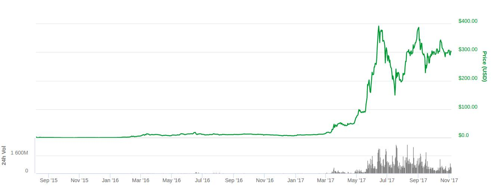

Ethereum is a decentralized platform that runs smart contracts: applications that run exactly as programmed without any possibility of downtime, censorship, fraud or third party interference. These apps run on a custom built blockchain, an enormously powerful shared global infrastructure that can move value around and represent the ownership of property. This enables developers to create markets, store registries of debts or promises, move funds in accordance with instructions given long in the past (like a will or a futures contract) and many other things that have not been invented yet, all without a middle man or counterparty risk. The project was bootstrapped via an ether presale in August 2014 by fans all around the world. It is developed by the Ethereum Foundation, a Swiss nonprofit, with contributions from great minds across the globe.
The Ethereum Wallet is a gateway to decentralized applications on the Ethereum blockchain. It allows you to hold and secure ether and other crypto-assets built on Ethereum, as well as write, deploy and use smart contracts.
On traditional server architectures, every application has to set up its own servers that run their own code in isolated silos, making sharing of data hard. If a single app is compromised or goes offline, many users and other apps are affected. On a blockchain, anyone can set up a node that replicates the necessary data for all nodes to reach an agreement and be compensated by users and app developers. This allows user data to remain private and apps to be decentralized like the Internet was supposed to work.
Vitalik Buterin, a programmer from Toronto, first grew interested in bitcoin in 2011. Buterin learned about Bitcoin when he was 17, and soon after (in 2012) won the Bronze Medal at the International Olympiads in Informatics. He co-founded the online news website Bitcoin Magazine in the same year, writing hundreds of articles on the cryptocurrency world. He went on to code for the privacy-minded Dark Wallet and the marketplace Egora. After Buterin unveiled the Ethereum white paper, other developers participated in the project. The team behind Ethereum is very smart. I always look up the people that are behind a project before investing and Ethereum has 100% of my confidence.
The main driving force behind Ethereum's new popularity is from the investment community. When the potential value of Ethereum was discovered, investors began purchasing large quantitys of Ethereum driving the price up. Ethereum is still an extremely sought after cryptocurrency with high investment potential. Have a look at the price chart to view just how much Ethereum has risen in the past few years.
Chart provided by CoinMarketCap.
Ethereum is also alot more volatile than Bitcoin currently. However, this is probably as a result of its infancy status. Traders are less capable of dealing with its gyrations as they have not had the opportunity to study it over the long term. Many crptocurrency traders tend to rely on forex signals and even then the direction is hard to judge. Hence, if you are a trader that is looking to make a quick profit on the volatile moves of Ether, then it could be more difficult to give you clear guidance on the short term movements. However, from the perspective of an investment decision, the allure of Ethereum cannot be ignored. Like those investors who buy gold as a store of value, a crypto currency will serve the same purpose.
What sets them apart? Watch this video to find out!
The above ticker is the current price of Ethereum. You can also view recent prices in the below table. They are updated every five seconds.
| Date | GBP Price | USD Price |
|---|
The structure of the ethereum blockchain is very similar to bitcoin's, in that it is a shared record of the entire transaction history. Every node on the network stores a copy of this history. The big difference with ethereum is that its nodes store the most recent state of each smart contract, in addition to all of the ether transactions. (This is much more complicated than described, but the text below should help you get your feet wet.)
For each ethereum application, the network needs to keep track of the 'state', or the current information of all of these applications, including each user's balance, all the smart contract code and where it's all stored. Bitcoin uses unspent transaction outputs to track who has how much bitcoin. While it sounds more complex, the idea is fairly simple. Every time a bitcoin transaction is made, the network 'breaks' the total amount as if it was paper money, issuing back bitcoins in a way that makes the data behave similarly to physical coins or change.
To make future transactions, the bitcoin network must add up all your pieces of change, which are classed as either 'spent' or 'unspent'. Ethereum, on the other hand, uses accounts. Like bank account funds, ether tokens appear in a wallet, and can be ported (so to speak) to another account. Funds are always somewhere, yet don’t have what you might call a continued relationship.